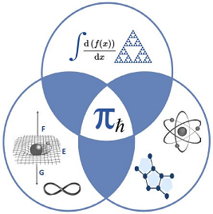
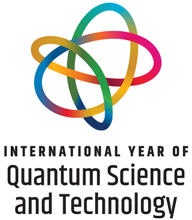
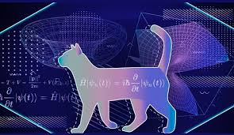
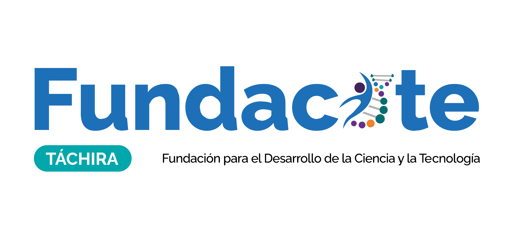
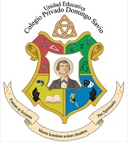
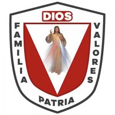
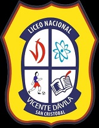

El Festival de las Ciencias
El Festival de las Ciencias es un evento organizado por el Centro de Enseñanza y Divulgación de las Ciencias (CEDIC) en colaboración con los departamentos de Matemática y Física y Química que tiene por finalidad generar experiencias memorables y participativas que fomenten la curiosidad y la experimentación.
Este emocionante evento se llevará a cabo los días 09 al 10 de julio de 2025 en las instalaciones de la Universidad Nacional Experimental del Táchira (UNET). Te invitamos a ser parte de esta gran celebración de la ciencia y la tecnología.
¿Qué podrás encontrar en el Festival de las Ciencias?
Exposiciones: Disfruta de una amplia gama de proyectos innovadores desarrollados por estudiantes en las áreas de ciencia y tecnología.
Conferencias: Participa en conferencias magistrales donde podrás aprender sobre los últimos avances en diversos campos científicos.
Un ambiente dinámico y familiar: Comparte este evento en familia y amigos, y disfruta de un ambiente lleno de aprendizaje y entretenimiento.
¡No te pierdas esta oportunidad de sumergirte en el fascinante mundo de la ciencia y la tecnología!.
Es importante destacar que el Departamento de Matemática y Física, a través de la revista Aleph subcero, publicará una edición especial en el apartado de divulgación científica. Esta edición estará dedicada a todos aquellos trabajos que cumplan con los requisitos de evaluación y arbitraje establecidos por la revista. Los invitamos a participar activamente en estas actividades y a formar parte de esta gran celebración.
Temática
Ciencias Fundamentales
Ciencias Aplicadas
Computación y estadística
Robótica
Comité Organizador
Local:
Centro de Enseñanza y Divulgacion del la Ciencias (CEDIC). Departamento de Matemática y Física. UNET.
Externo:
U.E. Colegio Divina Misericordia, U.E. Colegio Domingo Savio, Liceo Nacional Vicente Dávila.
Conferencias
Miércoles 09 de Julio (Mañana).Lugar Auditorio A. Robótica educativa una respuesta para todos.
Hora: 9:30 am
Miércoles 09 de Julio (Mañana).Lugar Auditorio A.
NARBED: Una Experiencia que Transforma la Enseñanza
Hora: 10:45 am
Jueves 10 de Julio (Mañana).Lugar Auditorio A.
Realidad Aumentada: Transformando la Enseñanza de las Ciencias.
Hora: 9:30 am
Expo-Festival
Exposiciones de proyectos científicos Miércoles y Jueves de 9:00 am a 12:00 m
Lugar: Hall de la Biblioteca UNET.
Programa del Evento
| Hora | Miércoles 9 | Jueves 10 | |
|---|---|---|---|
| 8:00 a 8:45 | Organización de exposiciones | Exposición de Proyectos | |
| 9:00 a 9:30 | Apertura del Evento | Experiencias NARBED, una aproximacion a un curriculo necesario. | |
| 9:30 a 10:15 | REALIDAD AUMENTADA: Transformando la Enseñanza de la ciencia. | Robótica educativa una respuesta para todos. | |
| 10:15 a 10:45 | Coffee break/Receso | Coffee break/Receso | |
| 10:45 a 11:30 | Exposición de Proyectos | Foro: Retos de la Educacion en el siglo XXI | |
| 11:30 a 12:00 | Visita Guiada CEDIC, Aula Viva | Clausura del evento | |
| 9:00 a 1:00 | Exposición de Proyectos |